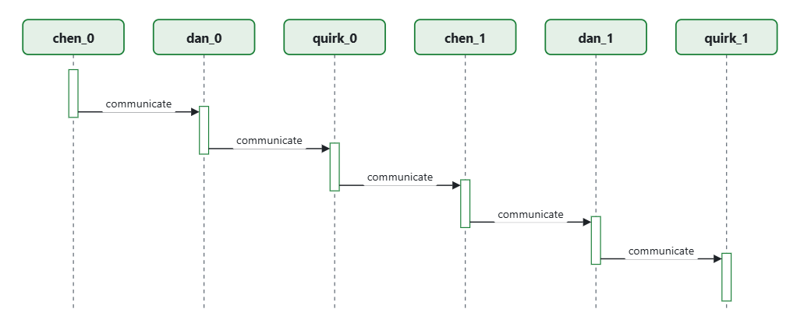

8 What we learned
8.1 Chen Dan Quirk divide and conquer
Chen Dan Quirk divide and conquer is a workflow we pioneered, and aisus is what made it work.
There is some multilayered humour here (which is admittedly only really funny if you are a super nerd). The name itself is a play on CDQ Divide and Conquer, an advanced algorithmic technique invented by Princeton University Computer Science Professor and IOI Gold medallist Chen Danqi. We already have a Chen and Dan on our team, Kerk just had to be given a sobriquet. Satvik Sinha was already calling Kerk "Quirk" all the time anyway.

Secondly, using aisus to develop aisus is really meta. One can surely something witty to say about recursive self-improvement here. Prof Ben brought this up during one of our progress reports.
With AI in the loop, work stops parallelising. Writing code, the computation, is no longer the bottleneck. Communication is: merging, meeting and presenting ideas to each other. Worse, the presenter often does not fully know what their own AI wrote. And with three people, consensus is hard. One presenter can be read two different ways by the two listeners.
Our shifts are strictly one sender and one receiver, with no distributed consensus to
reach. The person on shift works at full speed without worrying about anyone else, and has
sufficient time within the shift to prepare a comprehensive presentation of their work to
the next person. 
How did we hand over a shift? With aisus diagrams, of course.
The shifts also had practical benefits, freeing up real for our other courses, reports and for marketing. By our own rough estimate, we moved about three times faster this way.
8.2 How hard privacy is to get right
aisus states its privacy guarantees as invariants. Each invariant has a mechanism that enforces it.
| Invariant | Enforced by |
|---|---|
| The extension sends nothing over the network. | A unit test that bans network imports and APIs outside the cloud client. |
| A map cites no secret and no file outside the repository. | Path confinement with symlinks resolved, and a deny-list of secret files. |
| The cloud stores maps, never code. | A closed upload schema and a secret scan of every upload. |
| The map viewer receives only the map. | A webview under default-src 'none' that is sent JSON, never files. |
| No input reaches a shell. | Agents and git launched by absolute path, with fixed arguments and no shell. |
| Answer keys stay hidden from the student. | Keys held by the referee script or the extension host, never by the interface. |
The weakest boundary is the agent. It runs inside a repository it has never seen, and text in that repository can steer it.
Pre-approved commands widen that boundary. Claude Code runs a skill's pre-approved
commands without a prompt, and a * in a rule matches any arguments. The Bug
hunt skill pre-approved its scripts with such a rule, and one script ran its
--check-cmd argument as a shell command. Planted text could run any command
through it.
The fix removed the argument, narrowed every rule to scripts that only read and write data, and pre-approved no edit tool.
The no-network invariant prevents us from obtaining proper telemetry, which means we cannot see where users get stuck. This affected the analysis in Section 6.
8.3 Skills can carry code
Our biggest technical lesson was that an agent skill can carry code as well as instructions.
We began by writing skills as markdown alone, and the agent did every step itself. Many of those steps had one right answer and needed no judgement. Before mapping, the skill records the current commit, sizes the repository to cap how many files the agent reads, and finds the previous map to build on. Afterwards, it checks the map against its schema and renders it to HTML.
That kind of work is exactly where an agent hallucinates. It sometimes invented a file path, skipped a field or produced a map that would not load.
So we moved those steps into JavaScript that ships with each skill. The agent now runs a script wherever a fixed rule decides the result, and spends its effort on the reading and naming that need judgement. The scripts give the same output on every run, and we test them like the rest of the codebase.
The wider lesson is that a skill need not be markdown only. Any step that code can do reliably should be handed to code.
8.4 How good we are at marketing
'Nuff said.
9 Conclusion and Acknowledgements
We set out to answer comprehension debt with a picture: a map of the whole system, where every box opens the code that proves it. Code has become too much for people to write, and we believe the next step after agents is the visual medium. aisus is our first step there, and we gave it everything we had. We have a humble patronage of users who seem to agree.
Thank you to Dr Ben Leong and Dr Soo Yuen Jien for running CS3216, a course that lets students build something real. Thank you to our head teaching assistant Phillmont Muktar, and to our teaching assistants Lee Jia Wei, Markus Yeo Jing Yu and Rajarshi Basu, for their feedback and patience. Thank you to every guest speaker who showed us what building a product actually takes. And thank you to Prof Ben for the roast after our second progress report, without which there would be no Best Video and Marketing award.